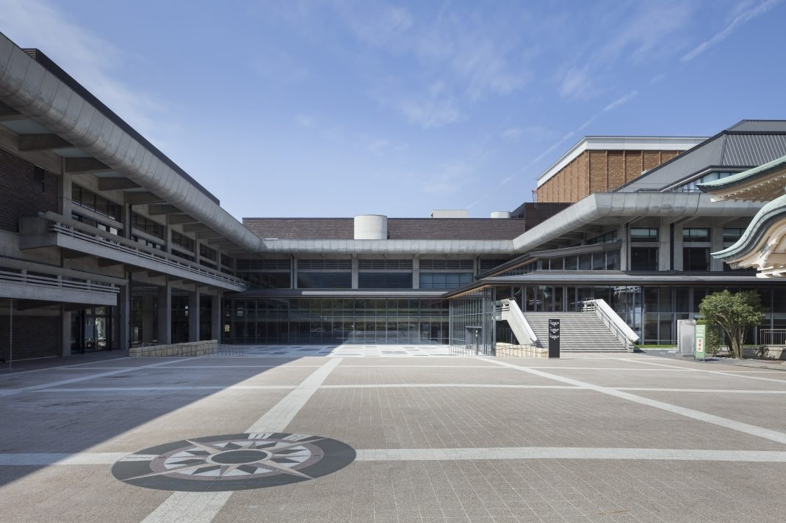
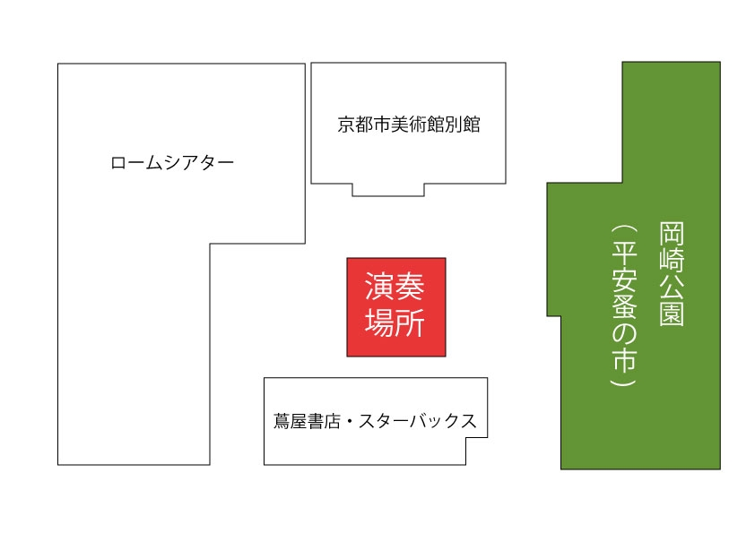

平安音楽広場
「平安音楽広場」は、音楽を演奏したり、歌を歌ったりする音楽関連イベントです。
この広場で音楽を奏でたり歌を歌っていただける方を募集します。
[ 場所 ]
ロームスクエア（ 蔦屋書店・スターバックスの北側にある広場 ）
住所：〒606-8342 京都府京都市左京区岡崎最勝寺町
開催日：平安蚤の市の開催される日（ 雨天・荒天中止 ）
開催時間：10:00~15:00


[ 参加申し込みについて ]
▷音楽に関連する参加者（ピアノ演奏、ブラスバンド、吹奏楽、弾き語り、ジャズバンドなど）を募集します。（ 規約・趣旨に準じた内容であること）
▷演奏場所：赤い四角ブース ( ８ｍ×８ｍ以内 )
▷参加料金：無料 （ 必要経費は各自でご負担ください。）
▷演奏時間：① [午前の部]１０：００〜１１：００ ② [午後の部]１３；００〜１４：００
▷設備：電源プラグの貸し出しあり
▷物販について：物販は禁止です。（ただしCDやカセットテープなどの音源の販売や、投げ銭行為など一部例外とします。その場合、物販売上の１０％をイベント終了後に実行委員会にお支払いください。）
▷応募方法：平安音楽広場の利用規約を了承の上、下記の応募フォームよりお申し込みください。
平安音楽広場の利用規約
１．規約の履行
参加者は、以下に述べる各規約を遵守しなくてはなりません。これらに違反したと平安蚤の市実行委員会（ 以下、「実行委員会」）が判断した場合、その時期を問わず参加申し込みの拒否、参加の取り消しや変更を実行委員は命じることができます。その際、実行委員会の判断基準・根拠などは公表しません。参加取り消しや変更によって生じた参加者および関係者への損害も補償しません。
２.組織
平安音楽広場は平安蚤の市実行委員会によって構成されています。参加者は各実行委員・スタッフの指示に従ってください。
３．参加申し込み
規約に同意の上、開催趣旨に賛同いただいた方は参加の申し込みをしていただけます。実行委員会で選考の上、後日参加の可否をお伝えします。選考基準や根拠などは公表しません。
内容が分かる音源や動画などの提出を求められた場合、それらを実行委員会に提出していただく場合がございます。
暴力団又は暴力団員、暴力団関係団体又は関係者、その他反社会的勢力の参加申し込み・入場・参加を固く禁じます。
４．禁止事項について
本イベントにおいて、以下の行為を禁止することに同意します。
・他の参加者、イベント運営スタッフその他の第三者や近隣施設への迷惑行為（暴力、暴言、脅迫、恫喝、ストーカー行為（待伏せ、迷惑メール等）、セクシャルハラスメントその他のハラスメント行為等を含みますが、これらに限られません。）
・第三者の著作権、商標権、意匠権、肖像権、所有権その他の権利を侵害する行為
・ 性的表現があるもの、及び、裸姿、下着姿での参加、社会通念を基準としてわいせつ行為と判断されるもの
・政治的ないし宗教的動機でイベントへの参加を申し込み、またはこれに参加する行為、ならびにこれらに準ずる行為
・物販は禁止です。（ただしCDやカセットテープなどの音源の販売や、投げ銭行為など一部例外とします。ただし売上の１０％をイベント終了後に実行委員会にお支払いください。）
・決められたブース以外での演奏を禁じます。
・会場を著しく汚すもの・設備を破損させる恐れがあるもの
・備品や設備の管理は、参加者の責任において行うこと。実行委員会ではそれらの管理は一切行いません。また、火災・盗難・破損についての責任も負いません。
・会場内の樹木や設備にロープ等を固定する行為を禁止します。
・ 喫煙場所以外での喫煙。
・ ガス・石油等裸火の使用。
・ 違法な薬物、危険物、大量の可燃物（ マッチ・オイル等 ）の持込み。
・ 持ち込んだ物やごみを持ち帰らず放置する行為（自分のごみは必ず自分で持ち帰ってください）。
５．音量について
・スピーカーなどの音源をご利用の場合は、音量に関して実行委員の判断に従うこと
６.開催時間
午前 １０ 時～午後 ３ 時
開催時間は会場の都合や天候によって変更になる場合があります。よって、開催時間や演奏時間を保証するものではありません。
７．搬入・搬出
搬入時間は①[午前の部]が午前９時から、②[午後の部]が、１２時からです。
搬出時間は[①午前の部]が１１時から１２時まで、[②午後の部]が、１５時からです。
撤収は遅延のないよう余裕をもって作業してください。
搬入・搬出時間以外に車を会場内に駐停車しておくことは出来ません。近隣のコインパーキング等をご利用ください。
搬入・搬出の時間や方法は、あらかじめ実行委員会と相談の上決定します。特別な事情のある方は、必ず事前にご相談ください。
８．参加者による設備や備品の破損
参加者及びその従業員の不注意や過失によって会場内の設備、案内表示・立ち木等の備品などを変形、破損させてしまった場合は速やかに実行委員会へお知らせください。原状回復に必要な実費を申し付ける場合があります。
９．参加者による人に対する傷害
参加者及びその従業員の不注意などによって会場内で生じた人的傷害について、ただちに賠償するものとします。
１０．損害賠償の免責
実行委員会は、平安音楽広場開催中における、参加者の設備・備品の破損・紛失・盗難及び車両事故、火災、自然災害等による損害賠償の責は一切負いません。
１１．開催中止の判断
平安音楽広場は雨天中止（一時的な小雨の場合は決行）となります。中止の場合は前日の１７時までに実行委員会が判断し、ホームページ等にて告知するものとします。中止によって生じた参加者の損害等は一切責任を負いません。
一度開催を中止した場合は、天候が回復しても開催を再開することはありません。途中で開催を中止した場合は、実行委員会の指示に従い速やかに会場から退出してください。
１２．その他
本規約は予告なく変更される場合があります。
[ お知らせ ]
・只今、お休みを頂いております。
お問い合わせ
mail : heiannominoichi@gmail.com
TEL : 070-1745-1503 （電話に出られない時がございます。その場合はメールにて承ります。）
平安蚤の市実行委員会宛